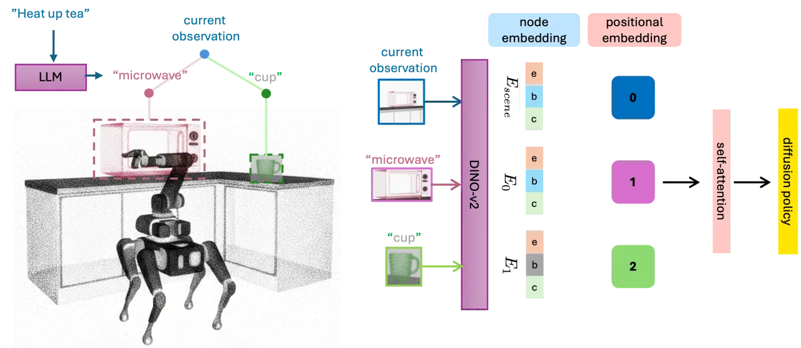
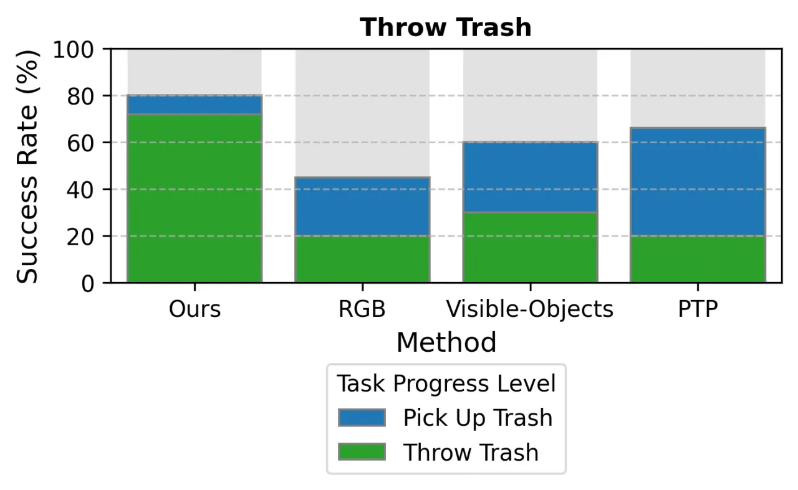
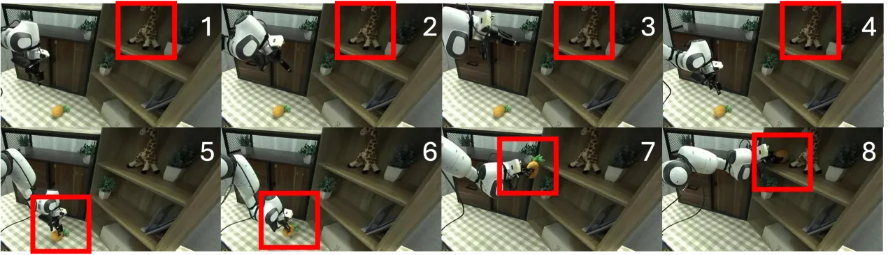

在部分可观测的真实空间里，机器人常因看不到"视野之外"的物体而在长时序任务中失手。本文把场景图（scene graph）作为一种"显式且结构化的记忆机制"，持续记录任务相关物体及其位置关系，喂给扩散策略（diffusion policy），从而在移动操作与桌面操作中都获得更稳的长时序推理与更强的鲁棒泛化。
模仿学习的策略在"小空间、短时序"的技能上已很有前景，但作者指出："at larger spatial and temporal contexts, their performance frequently deteriorates." 根源在于——真实空间往往部分可观测（partially observed）：一旦目标物体离开视野，只吃当前 RGB 图像（或把历史帧拉平成序列）的策略便丢失了对场外物体的记忆，无法完成需要跨越较长时间与空间的推理。
核心问题：机器人如何在部分可观测的大空间里，维持对"当前看不到、但任务需要"的物体的持久记忆，从而完成长时序任务？作者的答案是把场景图当作显式、结构化的记忆。

方法分三步：① 用 LLM 从任务语言里枚举"任务相关物体"；② 在每个时间步增量地构建并维护一张场景图，节点携带外观 + 2D/3D 位置；③ 把整张图编码为 transformer 表征，条件化一个扩散策略输出动作。
每个节点是三元组 ni = [ei, bi, ci]：ei 为物体掩码内平均池化的 DINO-v2 视觉嵌入；bi 为图像坐标 2D 包围框（物体离开视野时置空）；ci 为经深度反投影与里程计得到的世界坐标系 3D 质心。任务相关物体由 LLM（GPT-4）从任务描述里抽取名词实体，例如"Heat up a cup of tea"→ {microwave, cup, door}。
场景图逐步更新：已有节点由视觉跟踪器 XMem 跟踪，物体离开视野时其 bi 归零、但 ci 仍被保留（这正是"记住场外物体"的关键）；新检测由 Grounding DINO 给出，与已有节点按掩码重叠度比较，超过阈值 τm 才作为新节点加入。
每个节点编码为 Ei = [ei, MLP(bi), MLP(ci)]，并在最前面拼上一个场景级根节点 Escene；序列 Rsg = [Escene, E1, …] 加位置编码（区分根节点与物体节点）后送入 transformer 编码器。去噪网络 ϵθ(ak, Rsg, k) 在专家动作上以 DDPM 目标训练：ℒ(θ) = 𝔼‖ϵ − ϵθ(ak, Rsg, k)‖²；测试时以当前场景图为条件，通过逆向扩散迭代采样动作。
在两个平台上评测：仿真移动操作（Boston Dynamics Spot）与真实桌面操作（Franka Emika Panda，仅一颗手腕 ZED Mini RGB-D 相机，模拟部分可观测）。对比基线：RGB（多相机 RGB+本体感受的原始扩散策略）、Visible-Objects（仅当前视野的物体中心表征）、PTP（Past-Token-Prediction，10 帧历史 + 过去/未来动作预测的扩散策略）。成功率按任务子阶段分层统计。
| 任务 | 平台 | 时序（步） | 难点 |
|---|---|---|---|
| Throw Trash | Spot 仿真 | ~100 | 走近、拾取、投入垃圾桶 |
| Heat-up Tea | Spot 仿真 | ~300 | 开微波炉门、取杯、放入 |
| Heat-up Tea Long | Spot 仿真 | ~1000 | 同上但导航距离更长 |
| Feed-Giraffe | Franka 实机 | — | 扫描书架定位目标后按层放置 |
| Clean-Table | Franka 实机 | — | 收 1–3 个玩具入抽屉，全清后才关抽屉 |


两组消融衡量空间信息的贡献：Ours w/o 3D（去掉 3D 质心 ci，可见物体仅用 ei+bi，出视野物体仅用 ei）与 Ours w/o object locations（去掉全部位置信息，物体仅用外观嵌入 ei）。结果（Fig. 2d–f）显示：去掉 3D 或全部位置信息对首个子任务几乎无影响，却在后续子任务与整任务完成率上造成骤降。作者结论："providing explicit spatial information (3D centroids and 2D bounding boxes) is crucial"，尤其对长时序任务。
作者原话："While effective for long-horizon tasks, it depends on accurate object identification and may struggle in highly cluttered or dynamic environments." 场景图的构建以检测/分割为前提，识别一旦出错，记忆便被污染。
论文失败分析：真实实验 64 个 episode 中，有 4 例因遮挡或边界模糊导致分割失败；但绝大多数失败仍来自长时序设定下的模仿策略本身，而非仅仅感知。
扩散策略以 3.5–3.8 Hz 在 NVIDIA 3090 上运行；Grounding DINO 每个 episode 仅跑一次（0.53 s），掩码传播约 0.19 s/帧——整体依赖这些感知组件，扩展到更高频控制或更多物体时开销会上升。